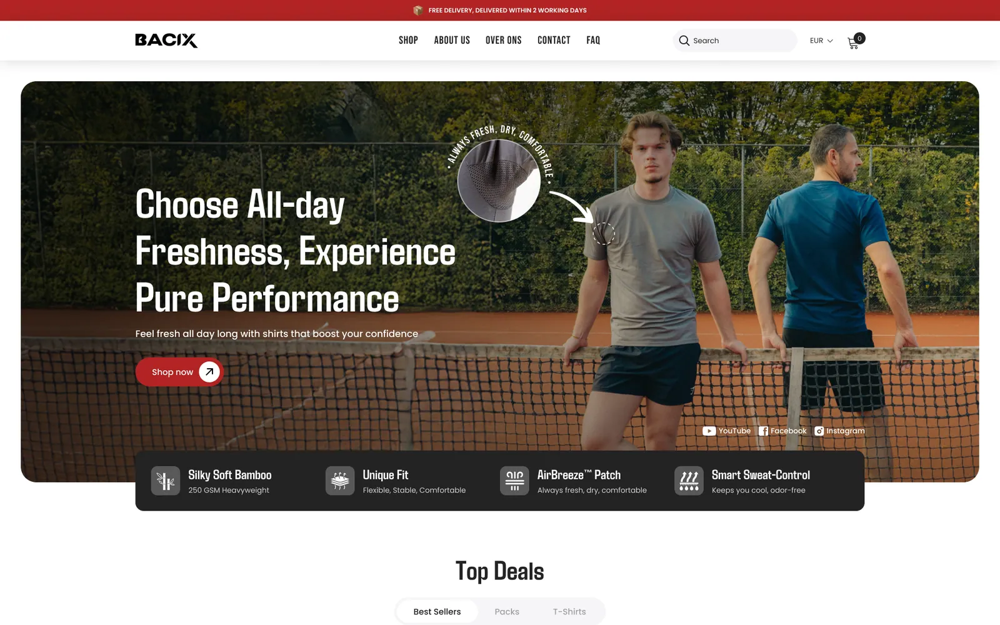
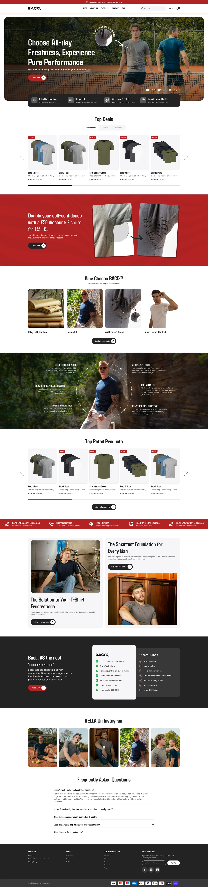
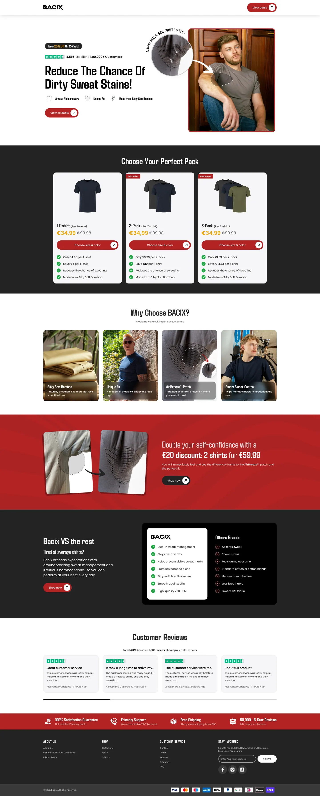
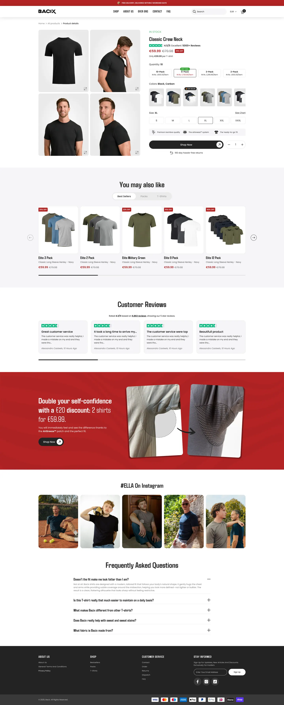
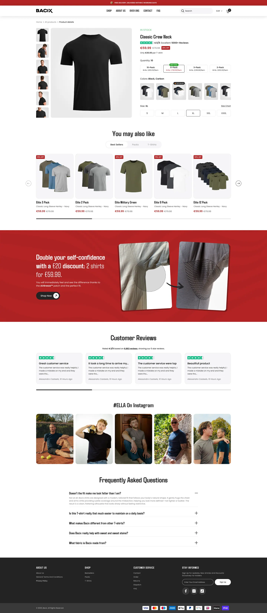

BACIXShopify apparel store
Sweat-proof tees, sold with confidence. - Shopify apparel store UI/UX case study
A Shopify store and campaign landing page for sweat-proof t-shirts, built around bundles and proof.

01Overview
A Shopify store and campaign landing page for sweat-proof t-shirts, built around bundles and proof.
BACIX makes t-shirts that hide sweat stains. I designed the homepage, a campaign landing page focused on bundle offers, and two product page versions that make it easy to choose a pack, colour and size.
02The challenge
What had to be solved
Sweat-proof clothing has to prove its claim. Shoppers need to see the benefit, trust it and pick the best-value pack, all on a mobile phone from an ad.
Design goals
- Explain the benefit in the first screen
- Push multi-packs as the best value
- Make colour and size selection quick
- Use reviews and comparisons as proof
03Process
How I approached it
- Benefit-first hero"Reduce the chance of dirty sweat stains" with the product in use and star ratings right below.
- Bundle pricingThree packs side by side with per-shirt price and savings, the middle one highlighted.
- Proof blocksBefore-and-after visuals, feature icons and customer reviews.
- Two product pagesA gallery-led and a single-image variant, ready to A/B test.
04Homepage
Freshness, performance and top deals.
A sporty hero, key features, top deals and a strong discount banner.

05Campaign landing page
Built for ad traffic.
One offer, clear bundles, proof and a single call to action, designed for visitors arriving from social ads.

06Product page
Choose a pack, a colour and a size.
Pack selector, colour swatches, size grid and add-to-cart in one view, with related products and reviews below.


07Decisions
Key design decisions
Showing the per-shirt price makes the bigger pack look like the obvious choice.
The brand red is reserved for buttons, badges and offers, so it always means "do this".
Designing two product page variants gives the client a ready-made A/B test.
08Design system
Visual language
Bold red and black on white, sporty condensed headlines and product photography on light grey.
TypeCondensed bold headlines, clean UI text
09Outcome
What was delivered
BACIX gets a Shopify store and landing page that explain the benefit fast, push bundle value and back it up with proof.
If the project continues, next I would:
- A/B test the two product pages
- Add a fit finder
- Design post-purchase upsell
Next project
FloworaCreate professional forms in seconds, with AI.View project